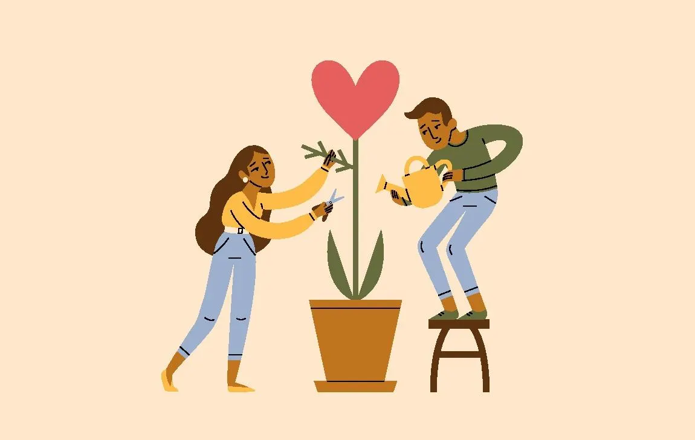

Love

Description
A slow, soulful connection wrapped in warmth, whispers, and trust.
Love is not rushed. It lingers.
Every movement—intentional, every breath—shared.
It nourishes not just the body, but the spirit.
Making love is less about actions, more about presence.
Ingredients:
- Time, without pressure
- Gentle hands and honest eyes
- Trust built in silence and words
- Laughter shared under dim lights
- Consent, constant and sacred
- Vulnerability like warm skin under a blanket
Steps:
- Start by holding each other without expectation—just warmth.
- Let your fingers trace stories only your bodies know.
- Whisper things you've never said aloud.
- Be slow. Be silly. Be real. Lose track of time.
- Let closeness bloom like goosebumps.
- Stay after. Stay soft. Stay safe.
- Love does not end after—it deepens.
- ~nyaaa
Home